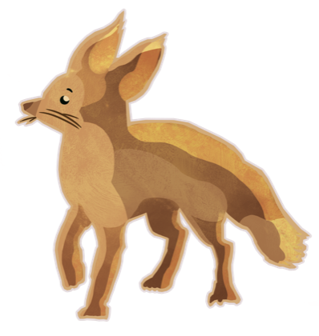
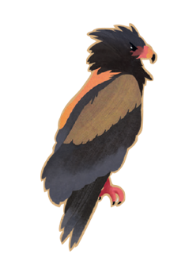
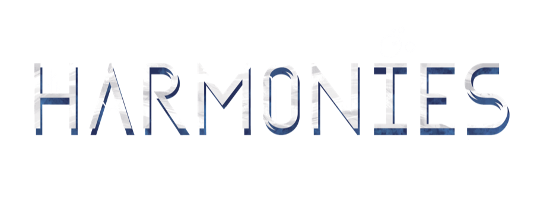
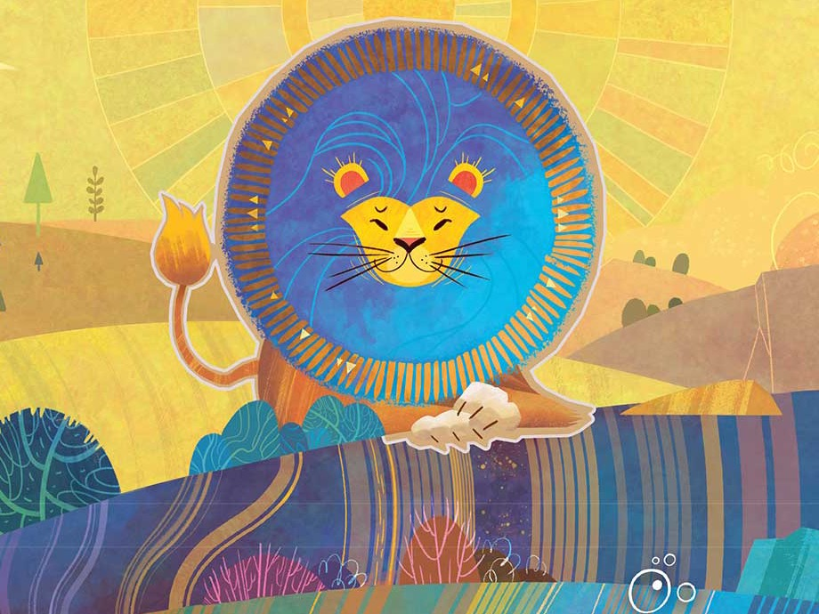
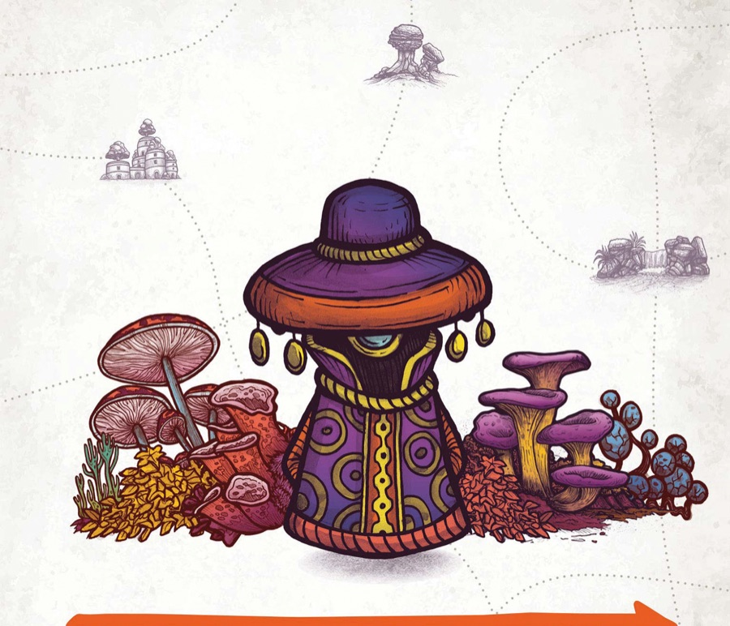
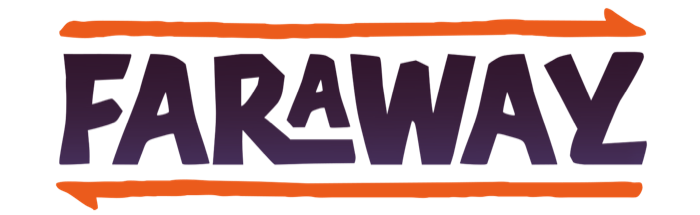

The Faithful Tally
Which game are we tallying?

Build landscapes, settle animals


Journey home, reveal your fame
Who's tallying tonight?
Continue
Just tally a game →
🏆 Leaderboard
🎲 Switch game
🏠 Switch player
🏆 Leaderboard
End-of-game tally
Player
Category
River
Islands
?
🏠 Switch player
🏆 Leaderboard
Reveal your cards right to left, add up the fame
← Back
← Back
🏆 Leaderboard